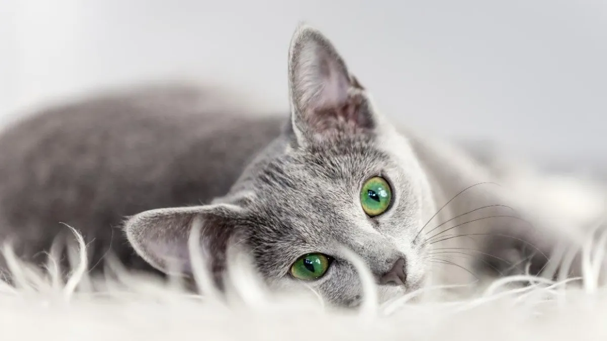
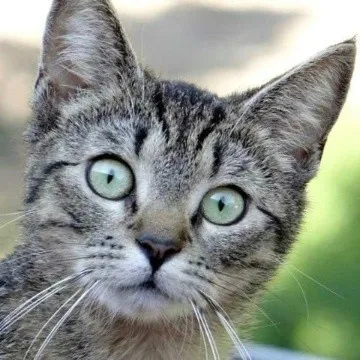

Los gatos son una especie perteneciente a la familia de los félidos, son mamíferos cuadrúpedos que poseen una cola, además de ser cazadores innatos gracias a sus características con las que cuentan para ello, como lo es su visión, su oído o su increíble olfato.
 En cuanto razas, los gatitos mestizos sin raza definida son mayoría en México (32.58%), seguidos de los americano de pelo corto (3.78%), europeos de pelo corto (2.94%), bombay (2.02%) y azul ruso (1.26%). Completan la lista las razas siamés, doméstico mexicano, american curl, mau egipcio y snowshoe.
La domesticación de los gatos se lo debemos a los egipcios hace más de 5,000 años, el intercambio cultural, conquistas y guerras hicieron posible que los gatos se propagaran por el territorio europeo y asiático, dando lugar a variaciones genéticas y la proliferación de distintas razas. Este mismo patrón fue lo que dio origen al gato mexicano, el cual es el sucesor de los gatos traídos de España durante la ocupación del país, en el período conocido como La Colonia. Su nombre científico es Felis Catus, tiene un peso promedio de dos a seis kilogramos y fue hasta el año de 1970 cuando fue reconocida como raza oficial por la Asociación Mexicana de Gatos en el país.